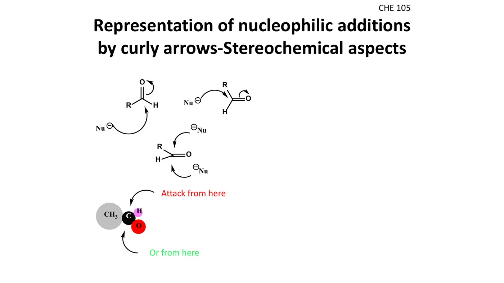
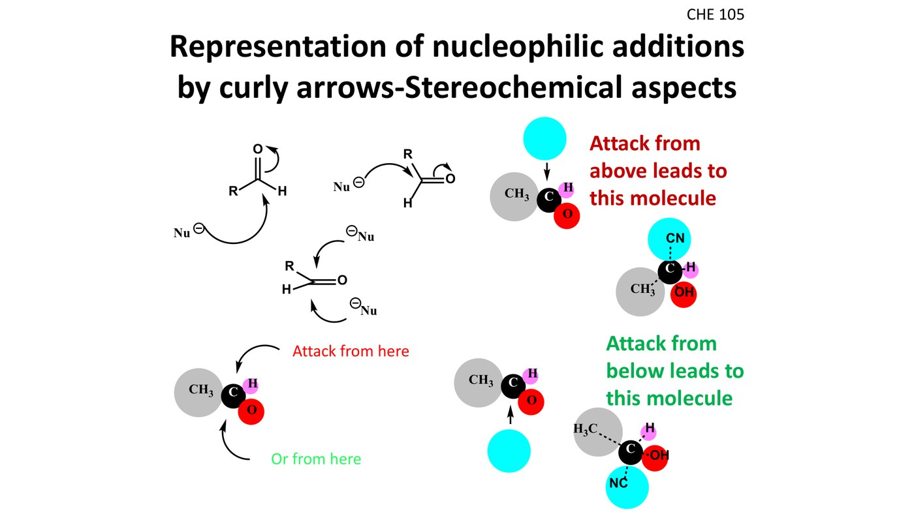

CHE105 · 第 6 章
羰基的亲核加成
Nucleophilic Addition to the Carbonyl Group
虚线下划线为术语；悬停查看中文、英文与释义，完整词典见“术语”。
本章目录
羰基是有机化学里最"好客"的官能团：碳缺电子、氧富电子，亲核试剂一来就能加上去。本章讲清进攻的角度、立体化学的后果、能造出哪六类分子，以及为什么还原剂有的"挑食"、有的"通吃"。
本章要点
- C=O 高度极化，碳是亲电中心；亲核试剂进攻碳，π 电子流向氧，生成四面体烷氧负离子。
- 亲核进攻沿 Bürgi–Dunitz 轨迹，与 C=O 双键成约 107° 角；这一角度也适用于酰胺、酯与烯烃。
- 羰基是平面的，亲核试剂从上方或下方进攻各得一个对映体——这是羰基加成产生手性的根源。
- 羰基加成可以造出六类分子：氰醇、醇、新 C–C 键、二醇、半缩醛、亚硫酸氢盐加合物。
- 水加成生成二醇（gem-diol），平衡受位阻与电子效应控制；三氯乙醛的水合物异常稳定。
- 醇加成生成半缩醛；分子间与分子内反应的分岔决定产物是链状还是环状。
- 有机金属试剂（RLi、RMgBr）把碳负离子送到羰基碳上，是构建 C–C 键的主力；第一步必须无水。
- NaBH4 只还原羰基，LiAlH4 还能还原硝基与酯——选择性与反应性要分开记。
6.1 羰基为什么"好客"
C=O 键由一根 σ 键与一根 π 键组成，碳与氧都是 sp² 杂化。氧的电负性明显大于碳，把 π 电子拉向自己，于是氧带部分负电、碳带部分正电。这个偶极是羰基全部反应性的起点：碳成了一个缺电子的亲电中心electrophilic centre，任何带电子对的物种都可以来进攻它。
用轨道语言说更清楚。C=O 的 π 成键轨道（π）是填充的，属于 HOMO 一侧；π 反键轨道（π*）是空的，能量低，是亲核试剂真正的"落点"。亲核试剂的孤对电子流进 π*，π 键随即断裂，两个电子全部退到氧上，生成一个烷氧负离子alkoxide。碳从 sp² 变成 sp³，几何从平面变成四面体——这就是"四面体中间体"这个名字的来历。
所以羰基加成的通用三步是：亲核进攻 → π 电子转移到氧 → 质子化。前两步给出烷氧负离子，第三步（通常由酸或水提供质子）给出中性的醇。任何羰基加成机理，都可以套进这个骨架。
L6 p.1、p.8
6.2 进攻角度：Bürgi–Dunitz 轨迹
亲核试剂并不是沿 C=O 的延长线直冲碳原子。实验与计算给出的最优路径是Bürgi–Dunitz 轨迹Bürgi–Dunitz trajectory：进攻方向与 C=O 双键成约 107° 角。这个角度不是随便定的，它让亲核试剂的孤对轨道能够与 π* 反键轨道最有效地重叠——角度太正，重叠的是 σ* 而不是 π*；角度太斜，重叠太弱。
讲义特别指出，这个 107° 不只适用于醛酮，也适用于 RCONH2（酰胺）、RCOOR′（酯）与烯烃。这是一个很有用的统一：所有"π 键 + 缺电子中心"的体系，亲核进攻都走同一条斜线。后面学亲核取代（酰胺、酯的反应）时，这条几何直觉可以直接搬过去。
把角度记住还有一个实际好处：画机理时箭头的弧度应当体现这条斜线，而不是垂直扎向碳。箭头画得对，说明你理解了轨道重叠的方向；画成垂直，往往意味着把羰基当成了"一个点"而不是"一个有方向的 π 体系"。

Clean vector diagram of a carbonyl group drawn in the plane with C double bonded to O, a dashed line along the C=O axis, and a nucleophile approaching the carbon from an angle of 107 degrees to that axis, with the angle arc labeled 107 degrees and the nucleophile drawn with a lone pair pointing toward the carbon; a second small panel shows the resulting tetrahedral alkoxide with the oxygen bearing a negative charge. Flat 2D, thin 1.5 px strokes, muted slate blue and warm grey palette, white background, English labels, no cartoon, no gradient, no shadow.
L6 p.2
6.3 立体化学：从上面来，还是从下面来
羰基的三个基团（C 上的两个取代基与氧）共平面。这个平面把空间分成上下两半，而亲核试剂可以从任何一面沿 107° 轨迹进攻。两次进攻给出两个不同的产物：它们互为镜像，且不能重叠。
讲义用乙醛加氰离子（CN−）的例子把这个结果画得很清楚：从上方进攻，CN 与 OH 在纸面的同一侧；从下方进攻，CN 与 OH 分居两侧。两个产物的差别只在那个新生成的手性中心chiral center上——原来的 sp² 碳变成了连有 H、CH3、OH、CN 四个不同基团的 sp³ 碳，于是产生一对对映体enantiomer。
这一步是本章最重要的观念转换：前面几章的手性来自"分子本来就不对称"，这里的手性来自"反应从哪一面发生"。当羰基两侧的基团不同时，两面进攻在能量上并不等价（一面位阻更小），产物比例因此不为 1:1；但若两侧基团相同（例如甲醛或对称酮），两个产物就是同一个分子，不存在手性。

L6 p.3–4
6.4 羰基能造出哪六类分子
讲义把羰基加成的产物归为六类，这份清单相当于本章的目录，也是复习时的检查表：
- 氰醇（cyanohydrin）：CN− 加成，产物同时含 –OH 与 –CN。
- 醇（alcohol）：氢负离子或有机金属试剂加成，产物是醇。
- 新的 C–C 键：有机金属试剂（RLi、RMgBr）把碳链接到羰基碳上。
- 二醇（diol）：水加成到 C=O 上，同一个碳上带两个 –OH。
- 半缩醛（hemiacetal）：醇加成，同一个碳上带一个 –OH 与一个 –OR。
- 亚硫酸氢盐加合物（bisulfite adduct）：NaHSO3 加成，碳上带 –OH 与 –SO3Na。
六类产物的共同骨架是"原来的 C=O 碳变成了四面体，氧变成了 OH，新增一个基团"。差别只在新增的那个基团是什么：CN、H、R、OH、OR、SO3Na。把这张表背下来，等于把本章所有反应串成了一条线。
L6 p.8
6.5 氰醇：最小的一步加成
氰醇形成是最简单的羰基加成，因为亲核试剂只有一个原子（CN− 的碳）。机理由两根箭头组成。第一根：CN− 碳上的孤对进攻羰基碳，箭头从碳出发、沿 107° 方向指向羰基碳；同时 C=O 的 π 键断裂，另一根箭头从 π 键中点指向氧，两个电子归氧，生成烷氧负离子。第二根：氧上的负电荷接受一个质子（通常来自酸），得到 –OH。
产物叫氰醇cyanohydrin，也叫羟腈hydroxynitrile——同一个分子的两个名字，前者强调"醇 + 腈"，后者强调"羟基 + 腈"。醛与酮都能反应，通常需要酸的参与来质子化烷氧负离子。
安全提示在讲义里被单独强调：HCN 剧毒，所以实际操作不用纯 HCN，而是向氰化钠溶液中加入稀酸现场生成，并且必须在通风橱中完成。这条不是考点细节，但它解释了为什么教材总写"NaCN + 稀酸"而不是"HCN"。
氰醇还有后续用途：–CN 可以经酸性水解变成 –COOH（腈的酸性水解，第五章的箭头示例里出现过）。于是"加成一步 + 水解一步"就把羰基碳延伸成了一个羧酸——这是有机合成里延长碳链的经典手法。
L6 p.8、p.27–28；Master Curly Arrows p.12–13
6.6 水加成：二醇与平衡
水是弱亲核试剂，但用过量水时，它能加到 C=O 上，生成同一个碳上带两个羟基的偕二醇gem-diol。机理与氰醇完全同构：水的氧进攻羰基碳 → π 电子流向羰基氧 → 烷氧负离子质子化；随后新加上的 –OH 再去质子，得到中性的二醇。
这类反应通常是可逆reversible的，平衡位置取决于两方面的因素。第一是位阻与形状（size and shape）：羰基碳上挂的基团越大，四面体中间体越拥挤，平衡越偏向原料。第二是电子效应：电负性差异、诱导效应（inductive effects）与中介效应（mesomeric effects）会改变羰基碳的缺电子程度，从而改变水加成的倾向。
三氯乙醛（CCl3CHO）是一个极端例子：三个氯的强吸电子诱导效应使羰基碳格外缺电子，水合物的稳定性大幅提高，产物（chloral hydrate）可以分离出来，甚至能形成钾盐。对比之下，普通的醛酮水合物大多只能存在于水溶液中，蒸掉水就退回羰基。
反应是否真的发生，可以用光谱验证。羰基在红外光谱中有特征的 C=O 吸收；水合之后这根吸收消失，同时出现 O–H 吸收。讲义正是用"C=O 吸收消失、O–H 吸收出现"这一对变化作为水合发生的证据。

L6 p.11–16
6.7 醇加成：半缩醛与环
醇（ROH）与羰基加成，产物是半缩醛hemiacetal：原来的羰基碳上现在同时连着一个 –OH 与一个 –OR。机理与水加成同构，只是亲核试剂从 H2O 换成了 ROH，最后一步脱去的是 ROH 上的质子。
讲义在这里引入了一个重要的分类：分子间反应intermolecular reaction发生在两个分子之间，分子内反应intramolecular reaction发生在同一个分子内部。同一个分子如果既含羰基又含羟基，它就可以"自己跟自己"反应：羟基从链的一端弯回来，进攻另一端的羰基，形成一个环状半缩醛。
这个分岔解释了糖类为什么几乎都以环状形式存在：开链的葡萄糖含一个醛基与多个羟基，分子内的羟基进攻醛基，生成六元环或五元环的半缩醛，环上多出一个新的手性中心（异头碳）。讲义没有展开糖化学，但"分子内 vs 分子间"这一对概念是理解这类结构的钥匙。

Clean vector two-panel mechanism diagram of hemiacetal formation: left panel shows an aldehyde and a separate alcohol molecule with a curved arrow from the alcohol oxygen lone pair to the carbonyl carbon and a second arrow from the C=O pi bond to the oxygen, giving an acyclic hemiacetal with OH and OR on the same carbon; right panel shows a single chain molecule with a carbonyl at one end and a hydroxyl at the other end curling back so the hydroxyl attacks the carbonyl intramolecularly, giving a six-membered ring hemiacetal. Flat 2D, thin 1.5 px strokes, muted slate blue and warm grey palette, white background, English labels, no cartoon, no gradient, no shadow.
L6 p.17–21
6.8 酸催化与碱催化
羰基加成的速度可以通过加酸或加碱显著提高，但两者"帮忙"的方式完全相反。
酸催化作用于亲电试剂。质子加到羰基氧上，氧带正电，于是它更用力地把 π 电子拉向自己，羰基碳变得更缺电子、更亲电。同时，质子化也把原本较差的离去基团（–OH）变成了较好的离去基团（–OH2+），这对后续的取代反应尤其重要。代价是：酸性条件下亲核试剂本身可能被质子化而失去亲核性，所以酸催化要求亲核试剂足够弱碱。
碱催化作用于亲核试剂。碱夺去亲核试剂上的质子，把它变成带负电的物种（例如把 ROH 变成 RO−、把 H2O 变成 OH−），亲核性大幅增强。代价是：碱性条件下羰基碳的缺电子程度没有提高，所以碱催化对弱亲核试剂（如水、醇）效果最明显。
把两者放在一起看，能得到一条实用的判断规则：弱亲核试剂靠碱催化，弱亲电试剂靠酸催化。水与醇都是弱亲核试剂，所以它们加成到羰基上时通常需要酸或碱的参与；而氰离子、氢负离子、有机金属试剂本身就是强亲核试剂，不需要催化剂。
L6 p.22–24、p.29
6.9 亚硫酸氢钠加合物
亚硫酸氢钠（NaHSO3）也能加到羰基上，产物是碳上同时带 –OH 与 –SO3Na 的亚硫酸氢盐加合物bisulfite adduct。亲核原子是硫——亚硫酸氢根中的硫带一对孤对电子，与三个氧相连，仍具亲核性。
机理仍是那三步：硫的孤对进攻羰基碳 → π 电子流向氧 → 烷氧负离子质子化；随后硫上的负电荷（或钠盐形式）稳定下来。产物通常是白色固体，这一性质曾被用于醛酮的分离与提纯——加合物析出后过滤，再用酸或碱分解回羰基。
讲义把亚硫酸氢盐加合物与氰醇放在一起讲，因为两者有一个共同的实用价值：加合物可以作为"保护"或"活化"的中间体。加合物形成后，原来的羰基被"藏"了起来，分子其余部分可以继续反应；需要时再把羰基放出来。讲义在"bisulfite addition compounds for cyanohydrin formation"一页里，正是用加合物作为制备氰醇的中间体。
L6 p.25–27
6.10 有机金属试剂：造 C–C 键
前面几类亲核试剂的亲核原子是 N、O、S、C（氰基），它们加进去只改变官能团，不改变碳骨架。要增长碳链，需要一类特殊的亲核试剂：有机金属试剂organometallic reagent。
这类分子的特点是金属与碳共价成键。讲义列了两类：有机锂organolithium（R–Li）与格氏试剂Grignard reagent（R–MgBr）。关键在于电负性：Li 约 1.0、Mg 约 1.2、C 是 2.5。金属的电负性远小于碳，电子对偏向碳，于是碳带部分负电（δ−）、金属带部分正电（δ+）。换句话说，有机金属试剂是一个"被金属稳定住的碳负离子"。
正因为碳带 δ−，它能以亲核方式进攻羰基碳。以 MeLi 与醛在 THF 中反应为例：MeLi 的甲基进攻羰基碳 → π 电子流向氧 → 生成烷氧负离子；第二步加水（H2O）把烷氧负离子质子化，得到比原料多一个碳的醇。整个序列写成"1. MeLi, THF；2. H2O"。
讲义用一句大写强调了一个操作要点：第一步反应期间绝不能有水。原因很直接——有机金属试剂遇到水会立刻被质子化，变成烷烃（R–Li + H2O → R–H + LiOH），试剂还没碰到羰基就"死"了。所以这类反应必须在无水溶剂（如 THF）中进行，水要留到第二步才加。
L6 p.9–10
6.11 还原：NaBH4 与 LiAlH4 的选择性
氢负离子（H−）是最小的亲核试剂，加到羰基上就把 C=O 变成 C–OH，也就是把醛酮还原成醇。实际使用的氢负离子来源有两种：硼氢化钠sodium borohydride（NaBH4）与氢化铝锂lithium aluminium hydride（LiAlH4）。
讲义用三组底物做了对照，这组对照是本章最值得记的实验事实。底物分别含醛基 + 硝基、醛基 + 溴、醛基 + 酯基。用 NaBH4（在 NaOH/水/甲醇、甲醇或乙醇中，室温）时，只有醛基被还原成 CH2OH，硝基、溴、酯基原封不动。换成 LiAlH4 时，硝基被还原成氨基（–NH2）、酯基被还原成 –CH2OH，醛基同样被还原。
结论可以写成一句话：NaBH4 只还原羰基化合物，是"挑食"的还原剂；LiAlH4 还原能力更强，能还原硝基、酯等更多官能团，是"通吃"的还原剂。讲义把这一页的标题定为"Selectivity of reduction: NaBH4 versus LiAlH4"，随后又用"Reactivity of reduction"一页补了一句限定：能被 NaBH4 还原的只有羰基化合物。
机理解释为什么两者都是亲核加成：氢负离子进攻羰基碳 → π 电子流向氧 → 生成烷氧负离子 → 质子化得到醇。区别只在"氢负离子有多活泼"以及"试剂能不能碰到别的官能团"。LiAlH4 更活泼，也更要求无水条件。

L6 p.5–7
6.12 小结：反应性与选择性是两件事
把本章收回一张图：羰基碳缺电子，亲核试剂沿 107° 进攻，π 电子退到氧上，生成四面体烷氧负离子，质子化后得到产物。六个"亲核试剂"换了六种产物，但骨架完全一样。
本章最后要建立的是一个双层判断：反应性回答"这个试剂能不能反应"，选择性回答"它优先反应哪一个官能团"。NaBH4 与 LiAlH4 的对比是这一层区分的最佳教材——两者都能还原羰基，但面对含硝基、卤素、酯的复杂分子时，选择哪一个决定了合成路线是否可行。
酸/碱催化则提供了第三个调节旋钮：不改试剂、不改底物，只改介质的 pH，就能让同一个反应快上许多。酸让羰基更"饿"，碱让亲核试剂更"凶"——这句口语化的总结，比背十条机理都管用。
下一章转向离域与共轭：当 π 电子不再局限在一根双键上，而是摊到整个共轭体系时，"哪里富电子、哪里缺电子"的图景会整体改写。
L6 p.8、p.29